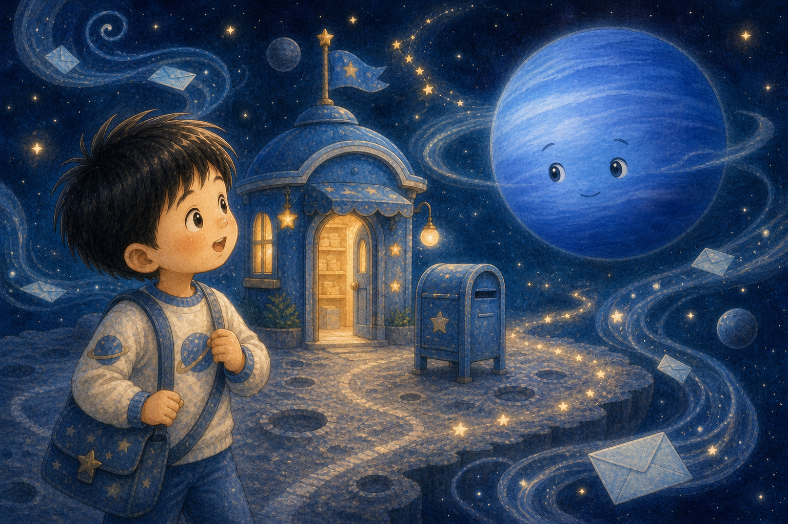
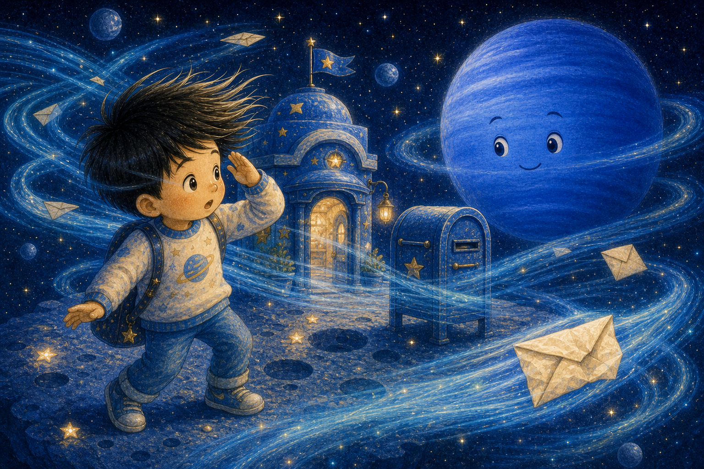
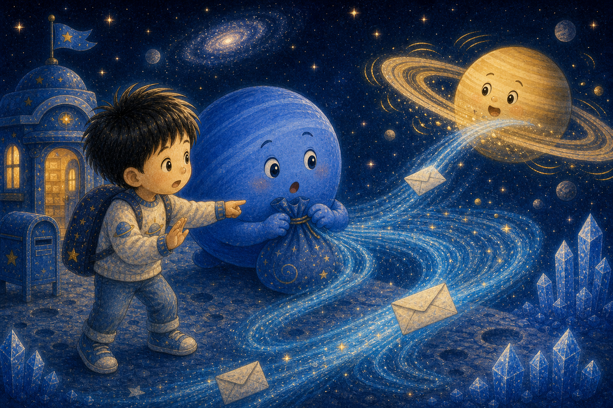
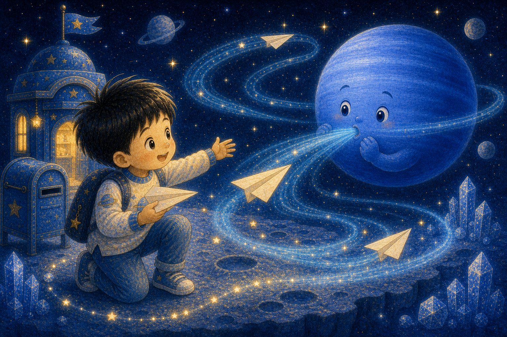
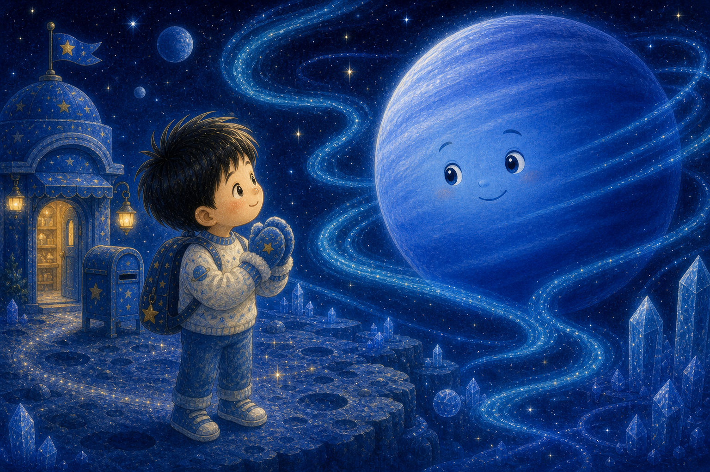
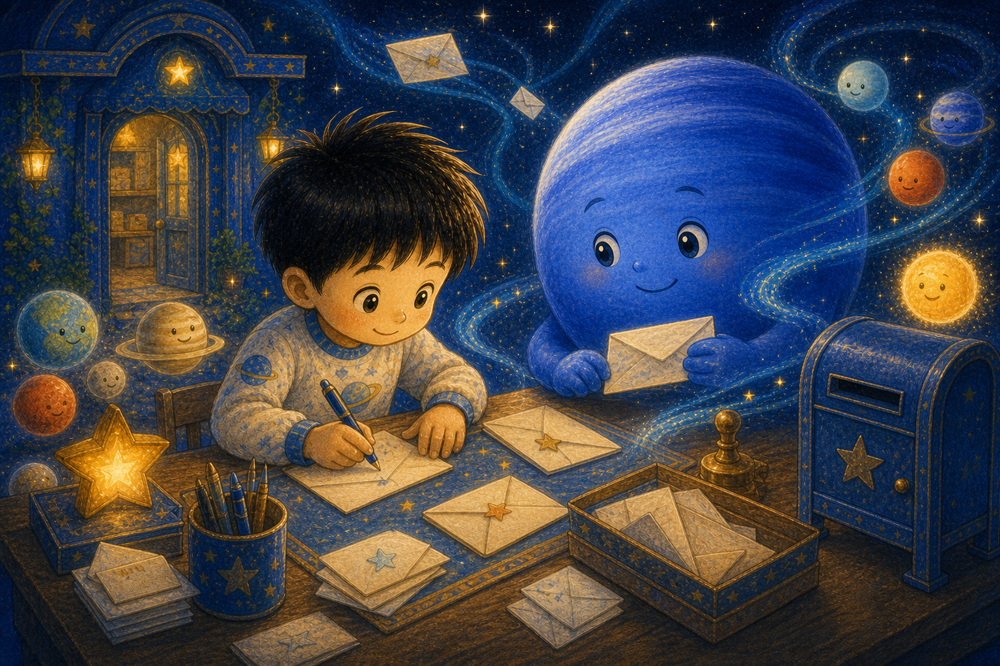
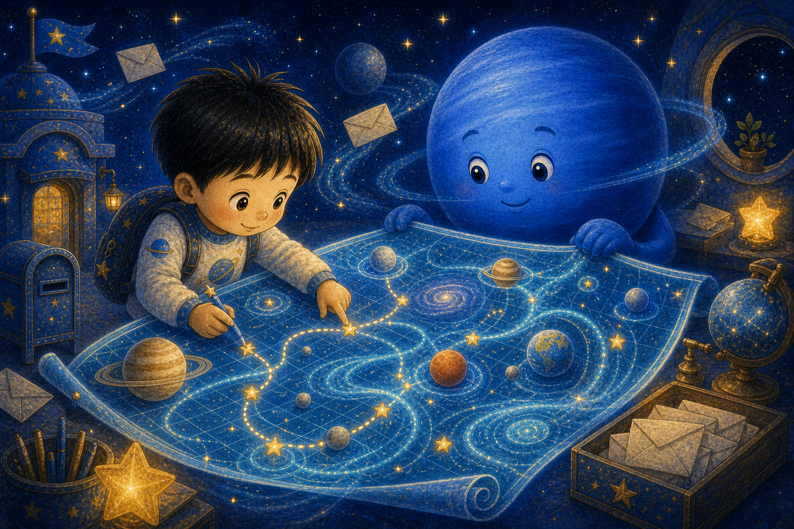
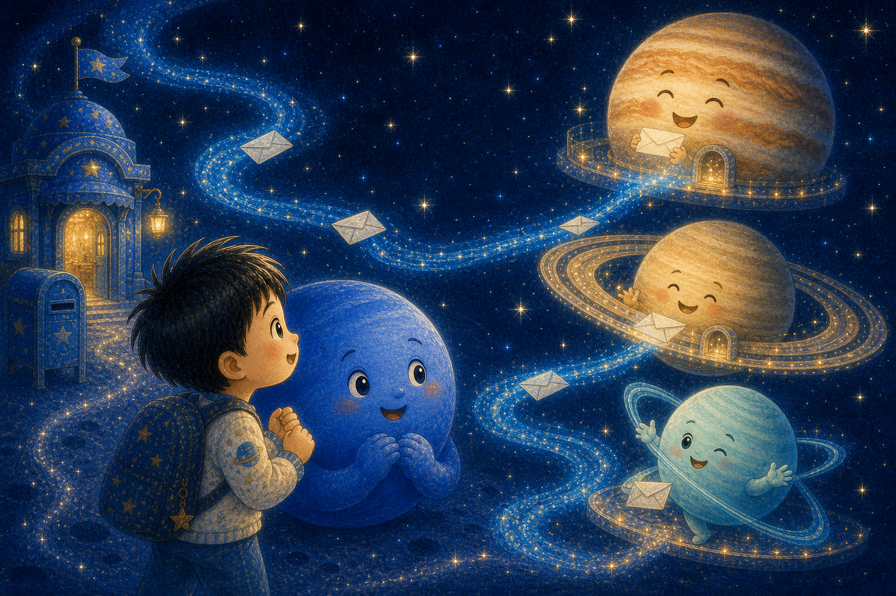
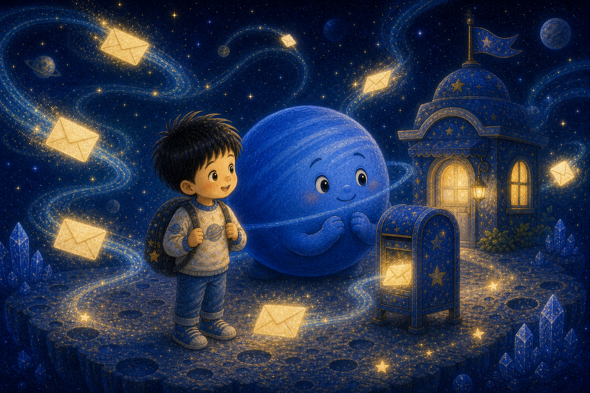
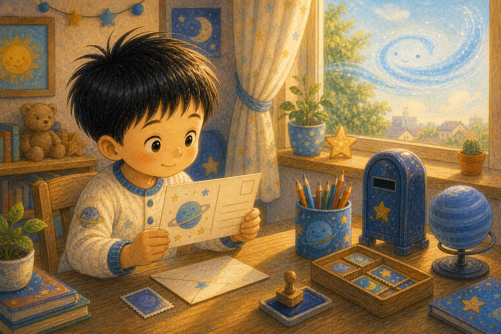

가장 먼 우체국
하늘이는 푸른 우체통 앞에서 해왕성을 만났어요. 해왕성은 태양계의 아주 먼 곳에서 바람 편지를 보내는 친구였지요.
"멀리 있어도 마음은 보낼 수 있어."

하늘이는 푸른 우체통 앞에서 해왕성을 만났어요. 해왕성은 태양계의 아주 먼 곳에서 바람 편지를 보내는 친구였지요.
"멀리 있어도 마음은 보낼 수 있어."

해왕성의 바람은 아주 빨랐어요. 편지를 싣고 슝 날아가자 하늘이의 머리카락도 살짝 흔들렸답니다.
빠른 바람에는 조심스러운 손길이 필요했어요.

처음 보낸 편지는 바람이 너무 세서 토성의 고리를 간질였어요. 해왕성은 놀라서 바람 주머니를 꼭 묶었지요.
"마음이 급하면 편지도 놀랄 수 있구나."

하늘이는 해왕성에게 종이비행기를 접어 주었어요. "이렇게 살짝 밀어 보면 어때?" 해왕성은 바람을 부드럽게 불었답니다.
부드러운 힘도 멀리 갈 수 있어요.

해왕성은 멀리 있어서 차갑고 푸르게 빛났어요. 하늘이는 따뜻한 장갑을 끼고도 그 빛이 아름답다고 느꼈지요.
차가운 곳에도 다정한 마음이 살 수 있어요.

하늘이와 해왕성은 편지에 행성 친구들의 이름을 하나씩 썼어요. 수성, 금성, 화성, 목성, 토성, 천왕성까지요.
이름을 쓰는 동안 친구들이 더 가까워졌어요.

해왕성은 푸른 바람길 지도를 펼쳤어요. 하늘이는 편지가 부딪히지 않도록 별 사이 길을 표시했답니다.
잘 전하려면 길을 살피는 마음이 필요해요.

이번 편지는 친구들의 창문 앞에 조용히 내려앉았어요. 목성은 웃고, 토성은 고리를 흔들고, 천왕성은 옆으로 춤췄지요.
부드러운 편지가 모두를 웃게 했어요.

밤이 깊자 해왕성 우체국에 답장이 하나둘 도착했어요. 해왕성은 멀리 있어도 더 이상 외롭지 않았답니다.
주고받는 마음은 먼 거리를 건너요.

아침에 깬 하늘이는 멀리 사는 친구에게 엽서를 썼어요. "보고 싶어. 그래도 우리는 친구야." 해왕성의 바람이 살짝 웃는 것 같았지요.
가장 먼 친구도 마음을 보내면 가까워진답니다.